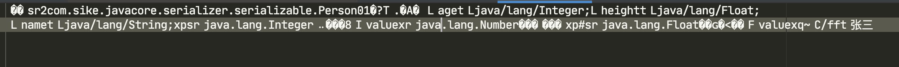
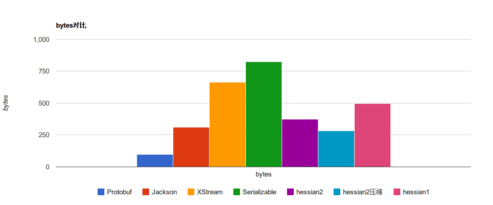
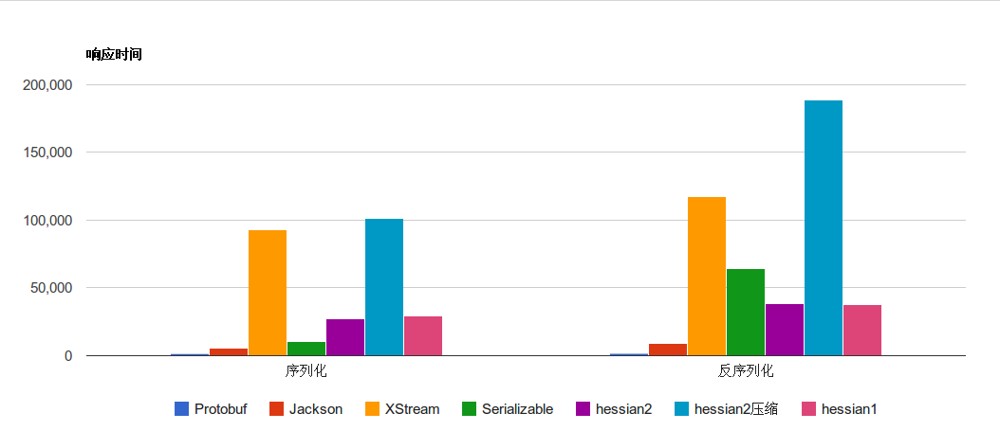
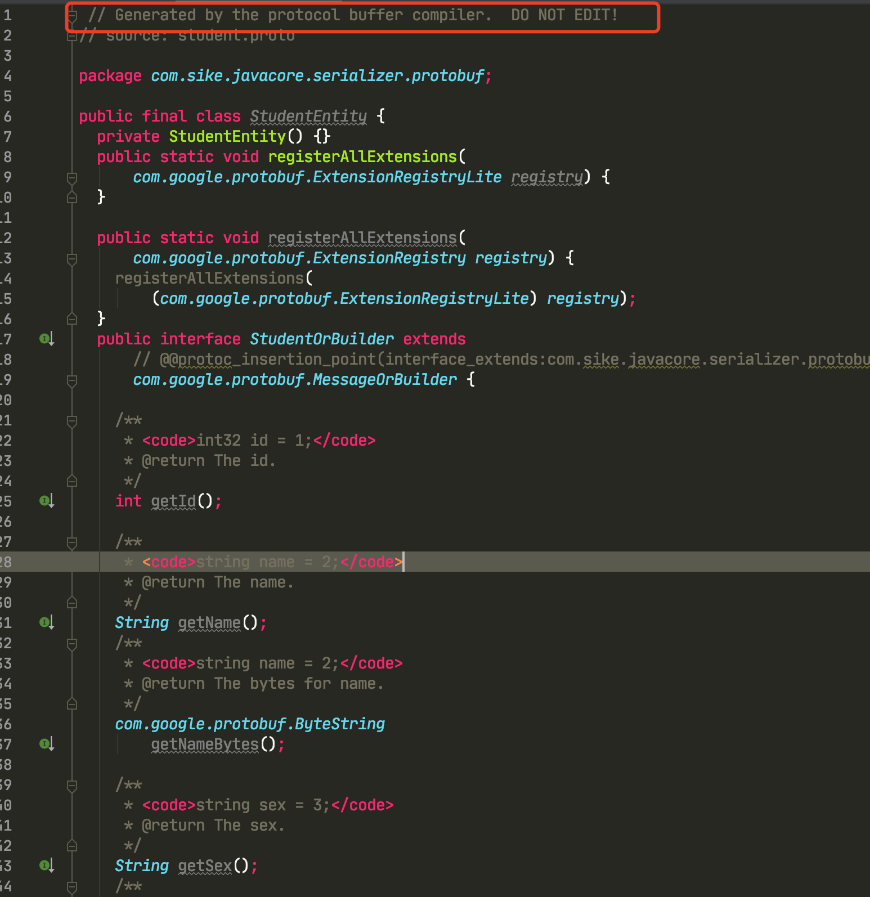

Java序列化是将Java对象转换为字节序列的过程，而Java反序列化则是将字节序列恢复为Java对象的过程。
序列化：任何需要保存到磁盘或者在网络进行传输的Java对象都需要支持序列化，序列化后的字节流保存了 Java 对象的状态及相关的描述信息，反序列化能够根据这些信息“复刻”出一个一模一样的对象。序列化的核心作用就是对象状态的保存。
反序列化：反序列化就是根据磁盘中保存的或者网络上传输的字节流中所保存的对象状态和相关描述信息，通过反序列化重建对象。
所以，从本质上来说，序列化就是将对象的状态和相关描述信息按照一定的格式写入到字节流中，而反序列化则是从字节流中重建这个对象。
为什么需要 Java 序列化和反序列化呢？
持久化。即将该对象保存到磁盘中。一般来说我们是不需要持久化 Java 对象的，但是如果遇到特殊情况，我们需要将 Java 对象持久化到磁盘中，以便于我们在重启 JVM 时可以重建这些 Java 对象。所以我们可以通过序列化的方式将 Java 对象转换成字节流，然后将这些字节流保存到磁盘中实现持久化。在我们应用程序重启时，可以读取这些字节流进行反序列化还原 Java 对象。
网络传输：我们都知道网络上传输的对象是二进制字节流，我们是无法传输一个 Java 对象给一个应用的，所以在传输前我们需要对 Java 对象进行序列化将其转换为字节流。而接收方则根据字节流中所包含的信息重建该 Java 对象。
Serializable 接口只是一个标记接口，不用实现任何方法。一个对象只要实现了该接口，就意味着该对象是可序列化的。
对象实现 Serializable 接口。
创建一个 ObjectOutputStream 输出流。
调用 ObjectOutputStream 对象的 writeObject() 输出可序列化对象。
x1public class Person implements Serializable {6
7 private String name;8
9 private Integer age;10
11 private Float height;12}13
14public class Serializable01 {15
16 public static void main(String[] args) throws Exception {17 ObjectOutputStream oos = new ObjectOutputStream(new FileOutputStream("person01.txt"));18 Person person01 = new Person("张三",35,175.4F);19 oos.writeObject(person01);20 }21}22
用 idea 打开 person01.txt 文件就可以得到如下内容：

从这个文件中我们基本上可以看清楚 Person01 对象的字节流的轮廓。
对象实现 Serializable 接口
创建一个 ObjectInputStream 对象
调用 ObjectInputStream 对象的 readObject()
31ObjectInputStream ois = new ObjectInputStream(new FileInputStream("person01.txt"));2Person person011 = (Person01) ois.readObject();3System.out.println("person01.txt 反序列化内容：" + person011.toString());运行结果：
11person01.txt 反序列化内容：Person01(name=张三, age=35, height=175.4)上面的例子 Person 的成员变量都是基本类型，如果成员变量为引用类型呢？
我们去掉 Person 类实现的 Serializable 接口，然后定义一个 Women 类。
151public class Person {2 3 private String name;4
5 private Integer age;6
7 private Float height;8}9
10public class Woman implements Serializable {11
12 private String hairColor;13
14 private Person person;15}我们再来序列化 Woman 这类
111public class Serializable02 {2
3 public static void main(String[] args) throws Exception {4 ObjectOutputStream oos = new ObjectOutputStream(new FileOutputStream("woman.txt"));5
6 Person person = new Person("李四",30,180F);7 Woman woman = new Woman("黄颜色",person);8
9 oos.writeObject(woman);10 }11}执行时，你会发现程序会抛出异常：
21java.io.NotSerializableException: com.sike.javacore.serializer.serializable.dto.Person2...所以，一个可序列化的类，如果它含有引用类型的成员变量，那么这个引用类型也必须是可序列化的。
有些时候我们并不需要将一个对象的所有属性全部序列化，这个时候我们可以使用 transient 关键字来选择不需要序列化的字段。
transient的作用就是用来标识一个成员变量在序列化应该被忽略。
91public class Person_1 implements Serializable {2
3 private String name;4 5 // 标识为 transient6 private transient Integer age;7
8 private Float height;9}将 age 属性标识为 transient。
151public class Serializable03 {2
3 public static void main(String[] args) throws Exception {4 // 先序列化5 ObjectOutputStream oos = new ObjectOutputStream(new FileOutputStream("person_1.txt"));6 Person_1 person = new Person_1("王五",32,180F);7 oos.writeObject(person);8 System.out.println("原对象：" + person);9
10 // 再反序列化11 ObjectInputStream ois = new ObjectInputStream(new FileInputStream("person_1.txt"));12 Person_1 person1 = (Person_1) ois.readObject();13 System.out.println("序列化后对象：" + person1);14 }15}运行结果
21原对象：Person_1(name=王五, age=32, height=180.0)2序列化后对象：Person_1(name=王五, age=null, height=180.0)从运行结果我们可以看出，用 transient 标识的属性，在进行序列化时会将该字段忽略，然后在反序列化的时候，被 transient 标识的属性会被设置为默认值。
一个类除了实现 Serializable 接口外来实现序列化，还有一种更加灵活的方式来实现序列化：实现 Externalizable 接口。
Externalizable 接口是 Serializable 的子类，它提供了 writeExternal() 和 readExternal() 方法让类能够更加灵活地实现序列化。
51public interface Externalizable extends java.io.Serializable {2 void writeExternal(ObjectOutput out) throws IOException;3
4 void readExternal(ObjectInput in) throws IOException, ClassNotFoundException;5} 一个类如果实现了 Externalizable 接口，即必须要实现 writeExternal() 和 readExternal() 两个方法。在这两个方法里面你可以做自己任何想做的事情。
371public class Student implements Externalizable {2
3 private String name;4
5 private int age;6
7 private int grade;8
9 10 public void writeExternal(ObjectOutput out) throws IOException {11 out.writeObject(name);12 out.writeInt(age - 2); // 年龄我虚报 2 岁13 // 成绩我不报了14 }15
16 17 public void readExternal(ObjectInput in) throws IOException, ClassNotFoundException {18 this.name = (String) in.readObject();19 this.age = in.readInt();20 }21}22
23public class Serializable04 {24
25 public static void main(String[] args) throws Exception {26 // 先序列化27 ObjectOutputStream oos = new ObjectOutputStream(new FileOutputStream("student.txt"));28 Student student = new Student("小明",15,55);29 oos.writeObject(student);30 System.out.println("序列化对象内容：" + student);31
32 ObjectInputStream ois = new ObjectInputStream(new FileInputStream("student.txt"));33 Student student1 = (Student) ois.readObject();34 System.out.println("序列化后的内容：" + student1);35 }36}37
运行结果：
21序列化对象内容：Student(name=小明, age=15, grade=55)2序列化后的内容：Student(name=小明, age=13, grade=0)根据运行结果我们看到，Externalizable 接口可以实现自定义的序列化和反序列化。
但是使用 Externalizable 接口时要注意，writeExternal() 方法和 readExternal() 的顺序要一致，即 writeExternal() 是按照怎么样的顺序来 write 值的，readExternal() 就必须严格按照这个顺序来 read ，否则会报错。
| serializable | Externalizable |
|---|---|
| 系统自动存储 Java 对象必要的信息 | 程序员自己来实现 Java 对象的序列化，灵活度更加高 |
| 不需要的属性使用 transient 修饰 | 不需要的属性可以不写入对象 |
| 在反序列化的时候不走构造方法 | 反序列化时，先走无参构造方法得到一个空对象，在调用 readExternal() 方法来读取序列化文件中的内容给该空对象赋值 |
先看一个例子。将 Student 对象序列化到本地磁盘 student.txt 文件中，然后在 Student 类里面增加一个字段，比如 className，用来表示所在的班级，然后再用刚刚已经序列化的 student.txt 来反序列化试图还原 Student 对象，这个时候你会发现运行报错，抛出下面的异常：
11Exception in thread "main" java.io.InvalidClassException: com.sike.javacore.serializer.serializable.dto.Student; local class incompatible: stream classdesc serialVersionUID = -1065600830313514941, local class serialVersionUID = 2126309100823681异常信息说明：序列化前后的 serialVersionUID 不一致。一个是 serialVersionUID = -1065600830313514941，另外一个是 serialVersionUID = 2126309100823681。
为什么两个 serialVersionUID 会不一样呢？因为我们对Student类做了变更，即所谓的升级。
在我们实际开发中，我们的 Class 文件不可能一成不变，它是随着项目的升级，Class文件也会升级，但是我们不能因为升级了 Class类就导致之前的序列化对象无法还原了，我们需要做到升级前后的兼容性。怎么保证呢？显示声明serialVersionUID。
Java序列化提供了一个
privatestaticfinallongserialVersionUID=xxxx的序列化版本号，只要版本号相同，就可以将原来的序列化对象还原。类的序列化版本号
serialVersionUID可以随意指定，如果不指定，则JVM会根据类信息自己生成一个版本号，但是这样就会无法保证类升级后的序列化了。同时，不指定版本号也不利于JVM间的移植，因为可能不同的JVM版本计算规则可能就不一样了，这样也会导致无法反序列化。所以，凡是实现Serializable接口的类，我们都需要显示声明一个serialVersionUID版本号。
无法跨语言：通过 Java 原生 Serializable 接口与 ObjectOutputStream 实现的序列化，只能通过 Java 语言自己的ObjectInputStream 来反序列化，其他语言，如 C、Python、Go 等等都无法对其进行反序列化。同时，跨平台支持也不是很好，客户端与服务端如果因为 JDK 的版本不同都有可能导致无法进行反序列化，这个就更加坑了。
序列化字节流太大：Java 序列化它需要将类的描述信息和属性进行序列化，如果不这样做，它根本无法还原，这就会导致序列化字节流变得很大。我们来做一个比较，一个是 Java 原生序列化，一个是通用的二进制编码。
241public class UserInfo implements Serializable {2 private static final long serialVersionUID = 1L;3
4 private Long id;5
6 private String userName;7
8 private String nickName;9
10 public byte[] codeC() {11 ByteBuffer buffer = ByteBuffer.allocate(1024);12 byte[] userNameBytes = this.userName.getBytes();13 buffer.putInt(userNameBytes.length);14 buffer.put(userNameBytes);15 byte[] nickNameBytes = this.nickName.getBytes();16 buffer.putInt(nickNameBytes.length);17 buffer.put(nickNameBytes);18 buffer.putLong(this.id);19 buffer.flip();20 byte[] result = new byte[buffer.remaining()];21 buffer.get(result);22 return result;23 }24} UserInfo 类有一个 codeC() 方法，该方法返回 UserInfo 的字节流。
121public class Serializable01 {2 public static void main(String[] args) throws Exception {3 ObjectOutputStream oos = new ObjectOutputStream(new FileOutputStream("person01.txt"));4 Person person01 = new Person("张三",35,175.4F);5 oos.writeObject(person01);6 oos.close();7
8 ObjectInputStream ois = new ObjectInputStream(new FileInputStream("person01.txt"));9 Person person011 = (Person) ois.readObject();10 System.out.println("person01.txt 反序列化内容：" + person011.toString());11 }12}运行结果：
21原生 JDK 序列化生成的字节流大小：2462UserInfo 对象字节流大小：31有 8 倍的差距，这差距还是有点儿大的。
序列化时间太长，还是上面的类把程序修改下。
211public class Serializable05 {2
3 public static void main(String[] args) throws Exception {4 UserInfo userInfo = new UserInfo(1001L,"zhangshan","张三");5
6 // 序列化7 long startTime = System.currentTimeMillis();8 ByteArrayOutputStream bout = new ByteArrayOutputStream();9 ObjectOutputStream out = new ObjectOutputStream(bout);10 out.writeObject(userInfo);11 out.flush();12 out.close();13 System.out.println("原生 JDK 序列化消耗时间：" + (System.currentTimeMillis() - startTime));14 bout.close();15
16 // 原生字节码17 startTime = System.currentTimeMillis();18 userInfo.codeC();19 System.out.println("UserInfo#codeC 消耗时间：" + (System.currentTimeMillis() - startTime));20 }21}运行结果
21原生 JDK 序列化消耗时间：92UserInfo#codeC 消耗时间：1序列化的目的是为了将 Java 对象的状态持久化存储起来或者在网络上传输。
对象的类名、实例变量（包括基本类型，数组，对其他对象的引用）都会被序列化；方法、类变量、transient实例变量都不会被序列化。
如果要序列化的类中包含有引用类型的成员变量，那么该成员变量也需要支持序列化。
反序列化时必须要有序列化对象的 Class 文件（这里埋坑了）。
对于 Serializable 接口而言，它只是起到一个标识作用。实现了该接口就意味着该类支持序列化。
如果我们不想要某个变量被序列化，使用 transient 修饰。
对于 Externalizable 接口
Externalizable 接口是 Serializable 的子类，它提供了 writeExternal() 和 readExternal() 方法类实现自定义的序列化和反序列化。
writeExternal() 和 readExternal() 两个方法对属性的加工顺序要一致。
建议所有实现了 Serializable 接口的类都显示申明 serialVersionUID 版本号
看代码
111public class Singleton {2 private Singleton(){}3
4 private static class SingletonInstance{5 private static final Singleton instance = new Singleton();6 }7
8 public static Singleton getInstance(){9 return SingletonInstance.instance;10 }11}我们知道要破坏单例模式就必须让它创建多个对象。创建对象的方式无非就几种：new、clone、反射、反序列化。
首先单例模式的构造器一定是 private 的，所以 new 这种方式是无法破坏单例模式的。 而 clone 需要实现 Cloneable 接口，单例模式谁如果实现了这个接口，请打死它。所以就剩下反射和反序列化了。
与 clone 方式一样，反序列化需要实现 Serializable 接口，谁会在单例模式中实现 Serializable 接口咯确实是这种情况，但是在实际情况中它并不是一定会避免的，有些类它就是一定要序列化。
继续用上面例子：
31public class SerializableSingleton implements Serializable {2 // 省略部分代码3}然后在对该类进行序列化和反序列化
121public class Test {2 public static void main(String[] args) throws Exception {3 ObjectOutputStream oos = new ObjectOutputStream(new FileOutputStream("Singleton.txt"));4 SerializableSingleton singleton = SerializableSingleton.getInstance();5 oos.writeObject(singleton);6
7 ObjectInputStream ois = new ObjectInputStream(new FileInputStream("Singleton.txt"));8 SerializableSingleton singleton1 = (SerializableSingleton) ois.readObject();9
10 System.out.println("singleton = singleton1：" + (singleton == singleton1));11 }12}运行结果
11singleton = singleton1：false 通过对 Singleton 进行反序列化得到了一个全新的对象，这就破坏了 Singleton 的单例性了。我们看 readObject() 源码就知道了。
111public final Object readObject() throws IOException, ClassNotFoundException {2 //...3 int outerHandle = passHandle;4 try {5 Object obj = readObject0(false);6 //...7 return obj;8 } finally {9 //...10 }11} 调用 readObject0() ：
161private Object readObject0(boolean unshared) throws IOException {2 // ...3 try {4 switch (tc) {5 // ...6
7 case TC_OBJECT:8 // readObject0()9 return checkResolve(readOrdinaryObject(unshared));10 // ...11 }12 } finally {13 depth--;14 bin.setBlockDataMode(oldMode);15 }16} readObject0() 是根据反序列化对象的不同执行不同的方法来反序列化一个实例对象。我们这里是 Object，所以进一步看 readOrdinaryObject()。
381private Object readOrdinaryObject(boolean unshared) throws IOException {2 // ...3
4 Object obj;5 try {6 // 核心代码 7 // 反射创建一个新对象8 obj = desc.isInstantiable() ? desc.newInstance() : null;9 } catch (Exception ex) {10 throw (IOException) new InvalidClassException(11 desc.forClass().getName(),12 "unable to create instance").initCause(ex);13 }14
15 // ...16
17 if (obj != null &&18 handles.lookupException(passHandle) == null &&19 desc.hasReadResolveMethod()) {20 Object rep = desc.invokeReadResolve(obj);21 if (unshared && rep.getClass().isArray()) {22 rep = cloneArray(rep);23 }24 if (rep != obj) {25 // Filter the replacement object26 if (rep != null) {27 if (rep.getClass().isArray()) {28 filterCheck(rep.getClass(), Array.getLength(rep));29 } else {30 filterCheck(rep.getClass(), -1);31 }32 }33 handles.setObject(passHandle, obj = rep);34 }35 }36
37 return obj;38} 那么对于这种方式有什么保护措施没？在 readOrdinaryObject() 最后面一段就已经告知了：
41if (obj != null && handles.lookupException(passHandle) == null &&2 desc.hasReadResolveMethod()) {3 //....4 } 判断反序列化的类是否已实现了 readResolve() ，如果有则会调用该方法，我们只需要在该方法里面返回原对象就可以了。验证下。
61public class SerializableSingleton implements Serializable {2 // ...3 private Object readResolve() {4 return SingletonInstance.instance;5 }6}执行结果
11singleton = singleton1：true要想防止单例被反序列化破坏，就让单例实现readResolve()方法，返回同一个对象即可。
Hessian是一种动态类型、二进制序列化和 Web 服务协议，专为面向对象的传输而设计。
与 Java 原生序列化类似，Hessian 也是采用二进制协议，不过它比 Java 原生序列化的性能更加高，序列化的字节数也更小。
与 Java 原生序列化相比，Hessian 具有如下几个特点：
它必须自我描述序列化类型，即不需要外部模式或接口定义。
它必须是独立于语言的，包括支持脚本语言。
它必须是可以通过单一方式进行读写。
它必须尽可能紧凑。
它必须简单，这样才能有效地测试和实现。
必须尽可能地快。
它必须支持Unicode字符串。
它必须支持8位二进制数据，而不需要转义或使用附件。
它必须支持加密、压缩、签名和事务上下文信封。
目前 Hessian 已经到 2.0 版本了，相比 1.0 版本，Hessian 2.0 版本增加了压缩编码，其序列化二进制流大小事 Java 序列化的 50%，序列化耗时是 Java 序列化的 30%，反序列化耗时是 Java 序列化的20%。
Hessian 序列化的字节数更加小，与它的实现序列化的语法密不可分，如下：
941 # starting production2top ::= value3
4 # 8-bit binary data split into 64k chunks5binary ::= x41 b1 b0 <binary-data> binary # non-final chunk6 ::= 'B' b1 b0 <binary-data> # final chunk7 ::= [x20-x2f] <binary-data> # binary data of8 # length 0-159 ::= [x34-x37] <binary-data> # binary data of10 # length 0-102311
12 # boolean true/false13boolean ::= 'T'14 ::= 'F'15
16 # definition for an object (compact map)17class-def ::= 'C' string int string*18
19 # time in UTC encoded as 64-bit long milliseconds since20 # epoch21date ::= x4a b7 b6 b5 b4 b3 b2 b1 b022 ::= x4b b3 b2 b1 b0 # minutes since epoch23
24 # 64-bit IEEE double25double ::= 'D' b7 b6 b5 b4 b3 b2 b1 b026 ::= x5b # 0.027 ::= x5c # 1.028 ::= x5d b0 # byte cast to double29 # (-128.0 to 127.0)30 ::= x5e b1 b0 # short cast to double31 ::= x5f b3 b2 b1 b0 # 32-bit float cast to double32
33 # 32-bit signed integer34int ::= 'I' b3 b2 b1 b035 ::= [x80-xbf] # -x10 to x3f36 ::= [xc0-xcf] b0 # -x800 to x7ff37 ::= [xd0-xd7] b1 b0 # -x40000 to x3ffff38
39 # list/vector40list ::= x55 type value* 'Z' # variable-length list41 ::= 'V' type int value* # fixed-length list42 ::= x57 value* 'Z' # variable-length untyped list43 ::= x58 int value* # fixed-length untyped list44 ::= [x70-77] type value* # fixed-length typed list45 ::= [x78-7f] value* # fixed-length untyped list46
47 # 64-bit signed long integer48long ::= 'L' b7 b6 b5 b4 b3 b2 b1 b049 ::= [xd8-xef] # -x08 to x0f50 ::= [xf0-xff] b0 # -x800 to x7ff51 ::= [x38-x3f] b1 b0 # -x40000 to x3ffff52 ::= x59 b3 b2 b1 b0 # 32-bit integer cast to long53
54 # map/object55map ::= 'M' type (value value)* 'Z' # key, value map pairs56 ::= 'H' (value value)* 'Z' # untyped key, value57
58 # null value59null ::= 'N'60
61 # Object instance62object ::= 'O' int value*63 ::= [x60-x6f] value*64
65 # value reference (e.g. circular trees and graphs)66ref ::= x51 int # reference to nth map/list/object67
68 # UTF-8 encoded character string split into 64k chunks69string ::= x52 b1 b0 <utf8-data> string # non-final chunk70 ::= 'S' b1 b0 <utf8-data> # string of length71 # 0-6553572 ::= [x00-x1f] <utf8-data> # string of length73 # 0-3174 ::= [x30-x34] <utf8-data> # string of length75 # 0-102376
77 # map/list types for OO languages78type ::= string # type name79 ::= int # type reference80
81 # main production82value ::= null83 ::= binary84 ::= boolean85 ::= class-def value86 ::= date87 ::= double88 ::= int89 ::= list90 ::= long91 ::= map92 ::= object93 ::= ref94 ::= string举几个例子：
boolean语法：
21boolean ::= T2 ::= FT 代表 true，F 代表 false。用如下代码演示下：
51hessianOutput.writeObject(true);2System.out.println("序列化：" + Arrays.toString(bos.toByteArray()));3
4// --运行结果5序列化：[84]84 的 ASCII 为 T。
int：Integer 语法如下：
41int ::= 'I' b3 b2 b1 b02 ::= [x80-xbf]3 ::= [xc0-xcf] b04 ::= [xd0-xd7] b1 b0 一个 32 位有符合的整数，它由八位数x49('I')表示，后面是整数的4个八位数，以高位优先（big-endian）顺序排列。其中 value = (b3 << 24) + (b2 << 16) + (b1 << 8) + b0
用如下代码演示下：
51hessianOutput.writeObject(1024);2System.out.println("序列化：" + Arrays.toString(bos.toByteArray()));3
4// --运行结果5序列化 ：[73, 0, 0, 4, 0]73 的 ASCII 为 I，4 << 8 就等于 1024。
对象：对象的语法如下
41class-def ::= 'C' string int string*2
3object ::= 'O' int value*4 ::= [x60-x6f] value*它的表示也很简单：
241class Car {2 String color;3 String model;4}5
6out.writeObject(new Car("red", "corvette"));7out.writeObject(new Car("green", "civic"));8
9---10
11C # 类的描述信息12 x0b example.Car # type is example.Car13 x92 # two fields14 x05 color # color field name // 属性名15 x05 model # model field name // 属性名16
17O # object def (long form)18 x90 # object definition #019 x03 red # color field value // 属性值20 x08 corvette # model field value // 属性值21
22x60 # object def #0 (short form)23 x05 green # color field value // 属性值24 x05 civic # model field value // 属性值51<dependency>2 <groupId>com.caucho</groupId>3 <artifactId>hessian</artifactId>4 <version>4.0.65</version>5</dependency>101public class Student implements Serializable {2
3 private String name;4
5 private int age;6
7 private Integer height;8
9 private transient String gender;10}Demo1
171public class Hessian02Test {2 public static void main(String[] args) throws IOException {3 Student student1 = new Student("张三",18,180,"男");4
5 // 序列化6 ByteArrayOutputStream bos = new ByteArrayOutputStream();7 HessianOutput hessianOutput = new HessianOutput(bos);8 hessianOutput.writeObject(student1);9 System.out.println("序列化内容：" + Arrays.toString(bos.toByteArray()));10
11 //反序列化12 ByteArrayInputStream bis = new ByteArrayInputStream(bos.toByteArray());13 HessianInput hessianInput = new HessianInput(bis);14 Student student2 = (Student) hessianInput.readObject();15 System.out.println("反序列化内容：" + student2);16 }17}执行结果
21序列化内容：[77, 116, 0, 48, 99, 111, 109, 46, 115, 105, 107, 101, 46, 106, 97, 118, 97, 99, 111, 114, 101, 46, 115, 101, 114, 105, 97, 108, 105, 122, 101, 114, 46, 104, 101, 115, 115, 105, 97, 110, 46, 100, 116, 111, 46, 83, 116, 117, 100, 101, 110, 116, 83, 0, 4, 110, 97, 109, 101, 83, 0, 2, -27, -68, -96, -28, -72, -119, 83, 0, 3, 97, 103, 101, 73, 0, 0, 0, 18, 83, 0, 6, 104, 101, 105, 103, 104, 116, 73, 0, 0, 0, -76, 122]2反序列化内容：Student(name=张三, age=18, height=180, gender=null)从执行结果来看，反序列化完美将 Student 对象还原了。
这里需要注意的是，无论是 Java 原生序列化还是 Hessian 序列化，对象都必须实现 Serializable 接口，否则会报
must implement java.io.Serializable异常。与 Java 原生序列化一样，用
transient标识的属性是不需要序列化和反序列化的。还有一点，若对象经过 Hessian 序列化后，在不加 serialVersionUID 的情况下，我们改变该对象的属性都不会引起 Hessian 反序列化失败，所以 Hessian 序列化对象不需要再使用 serialVersionUID 来标注对象版本了。
Demo2：再看一个稍微复杂的对象。
51public class SubStudent extends Student{2 private Integer height;3
4 private String subValue;5}SubStudent 继承 Student，并且拥有同一个属性 height。我们对 SubStudent 进行序列化和反序列化。
201public class Hessian03Test {2 public static void main(String[] args) throws IOException {3 SubStudent subStudent = new SubStudent();4 subStudent.setName("李四");5 subStudent.setHeight(185);6 subStudent.setSubValue("lisi");7 subStudent.setGender("男");8
9 // 序列化10 ByteArrayOutputStream bos = new ByteArrayOutputStream();11 HessianOutput hessianOutput = new HessianOutput(bos);12 hessianOutput.writeObject(subStudent);13 14 //反序列化15 ByteArrayInputStream bis = new ByteArrayInputStream(bos.toByteArray());16 HessianInput hessianInput = new HessianInput(bis);17 SubStudent student2 = (SubStudent) hessianInput.readObject();18 System.out.println("反序列化内容：" + student2);19 }20}运行结果
11反序列化内容：SubStudent(height=null, subValue=lisi)从反序列化结果我们看到 height 属性值为 null，但是我们明明对其值设置为 185 ，在反序列化时怎么会是 0 呢？这其实是与 Hessian 对复杂对象的处理逻辑相关：Hessian 会把复杂对象的所有属性存储在一个 Map 中进行序列化。所以在父类、子类中存在同名成员变量的情况下，Hessian 序列化时，先序列化子类，然后序列化父类。因此，反序列化结果会导致子类同名成员变量被父类的值覆盖。
Java 原生序列化性能太差，Hessian 可以作为一个好的替代者，相比 Java 原生序列化它的速度更快，序列化后的字节流更小，且跨语言，兼容性更好。咱们来验证下。
171public class Hessian04Test {2 public static void main(String[] args) throws IOException {3 Student student = new Student("张三",18,180,"男");4
5 // Hessian 序列化6 ByteArrayOutputStream bos1 = new ByteArrayOutputStream();7 HessianOutput hessianOutput = new HessianOutput(bos1);8 hessianOutput.writeObject(student);9 System.out.println("Hessian 序列化字节流大小：" + bos1.toByteArray().length);10 11 // Java 原生序列化12 ByteArrayOutputStream bos2 = new ByteArrayOutputStream();13 ObjectOutputStream outputStream = new ObjectOutputStream(bos2);14 outputStream.writeObject(student);15 System.out.println("Java 原生序列化字节流大小：" + bos2.toByteArray().length);16 }17}结果
21Hessian 序列化字节流大小：942Java 原生序列化字节流大小：224ProtoBuf（Protocol Buffers） 是 Google 推出的一个结构化数据交换协议，用于传递自定义的消息格式，可用于分布式应用之间的数据通信或者异构环境下的数据交换。
ProtoBuf 是一种语言无关、平台无关、高效、扩展性良好的语言，提供了一种将结构化数据进行序列化和反序列化的方法。它提供了多种语言的实现：Java、C#、C++、Go 和 Python 等等，基本上所有的主流语言都已经支持了，每一种实现都包含了相应语言的编译器以及库文件。
要使用 ProtoBuf 我们就必须先了解 ProtoBuf 的协议。在 ProtoBuf 中，协议是由一系列的 Message（消息）组成的，如下：
141systax = "proto3"; 2package School; 3
4message Student {5 required string name = 1 [default="张三"];6 optional string sex = 2;7 optional int32 heigth = 3 [default=175];8}9
10message Teacher {11 required strint name = 1;12 optional string class = 2;13 optional string object = 3; 14}systax = "proto3"：协议版本。表明我们使用的是 proto3，目前 ProtoBuf 有两个版本 proto2 和 proto3，默认使用 proto2。这个指定语法行必须是文件的非空非注释的第一行。
package School：包名。
message：消息体。
一个消息体 message 有四个部分组成：
限定修饰符
数据类型
字段名称
字段编码值
默认值
用于描述字段规则，它有三个值：
required：必须字段。对于发送方法，在发送消息之前，必须要设定该字段的值，对于接收方，它必须要能够识别该字段。用 required 修饰的字段如果发送方没有设定值或者接收方无法识别该字段都会导致解析失败，导致消息被丢弃。
optional：可选字段。表明该字段是可选择性的，发送方设定不设定该值都可以，接收方能不能识别也行。
repreated：可重复字段。说明该字段可以包含 0 ~ N 个元素，相当于 Java 中的数组或者集合。
在后续升级版本的时候，我们要使用 optional ，而不是 required，如果定义为 require，则需要所有子系统配合你一起升级，这明显是不现实的，所以推荐使用 optional 来进行平滑升级，带所有系统升级完毕后再调整为 required。
注意：要的是 proto3 移除了 required 和 optional 两个限定修饰符，因为 proto3 认为 required和 optional 字段是有害的并且违反了 protobuf 的兼容性语义。所以如果我们要使用 proto3 协议的话，就只能使用 repreated 了。
ProtoBuf 定义了一整套完整的基本数据类型，几乎都可以映射到 Java/C++ 等语言的基本数据类型：
| protobuf | 数据结构 描述 | 打包 | Java 语言映射 |
|---|---|---|---|
| bool | 布尔类型 | 1字节 | boolean |
| double | 64浮点数 | N | double |
| float | 32浮点数 | N | float |
| int32 | 32位整数 | N | int |
| uint32 | 无符号32位整数 | N | int |
| int64 | 64位整数 | N | long |
| uint64 | 64位无整数 | N | long |
| sint32 | 32位整数，处理负数效率更高 | N | int |
| sint64 | 64位整数，处理负数效率更高 | N | int |
| fixed32 | 32位无符号整数 | 4 | int |
| fixed64 | 64位无符号整数 | 8 | long |
| sfixed32 | 32位整数，能以更高的效率处理负数 | 4 | int |
| sfixed64 | 64位整数 | 8 | long |
| string | 只能处理ASCII字符 | N | String |
| bytes | 用于处理多字节的语言字符，如中文 | N | byte |
| enum | 可以包含一个用户自定义的枚举类型uint32 | N(uint32) | Enum |
| message | 可以包含一个用户自定义的消息类型 | N | Object |
相当于 Java 中的属性名，不过 ProtoBuf 推荐采用下划线分割，而不是驼峰式。比如：class_name 而不是 className。
通信双方互相识别的关键，有了该值，发送方和接收方才能互相识别对方的字段。对于该字段 ProtoBuf 有如下规定：
相同的字段编码值，其限定修饰符和数据类型必须相同。
同一个消息体不能有相同的字段编码值。
只要合法，无须连续
该值的范围为 1~2^32，其中 1 ~ 15 的编码时间和空间效率都是最高的，编码值越大，效率越低，所以我们一般都将该值设定为 1 ~ 15，超过了咋办？继续上增吧。
默认值：对于 required 类型的字段，我们可以使用默认值来进行设定，如required string name = 1 [default="张三"];，如果发送端没有设定该值，则默认使用张三来填充。
优点：
性能好，效率高：ProtoBuf 序列化速度块，比 XML 和 JSON 快 20 ~ 100 倍，性能极高。由于序列化生成的是一个紧致的二进制字节流，所以序列化后，数据包大小很小，因为体积小，所以传输起来带宽和速度都得到了较大的提升。
下面是 ProtoBuf 与其他序列化算法的对比，来看看他有多变态。从图中可以看出，无论是序列化速度还是序列化后的字节流大小，ProtoBuf 都是碾压式的。


跨平台、跨语言：ProtoBuf 是无关平台、无关语言的序列化算法的，所以它可以用于分布式应用系统或者异构系统之间的数据交互。且官方提供了几乎涵盖所有主流编程语言的实现，可扩展性非常好。
使用简单，兼容性好：接收端与发送端不需要根据版本同步进行，发送端增加一个字段，并不会影响接收端的使用。同时 ProtoBuf 的语法很简单，没有复杂的对象模型，且文档足够清晰。
缺点：
可读性差：因为是二进制，直接导致了可读性比较差，在开发测试时我们无法看到里面的实际内容，可能会影响开发效率，当然我们可以尽可能相信 ProtoBuf，它并不会出现太大问题。
缺乏自描述：一般来说，XML 和 JSON 是字描述的，而 ProtoBuf 则不是，你只能给 .proto 文件才能读懂数据结构。
要使用 ProtoBuf 我们就必须要按照 ProtoBuf 的编译器。MAC下如何安装了。
到 https://github.com/protocolbuffers/protobuf/releases 下载最新版的 ProtoBuf（protoc-21.5-osx-aarch_64.zip），然后解压。解压完成后执行以下命令就可以安装了：
31cd protoc-21.5-osx-aarch_642cp -r include/ /usr/local/include/3cp -r bin/ /usr/local/bin/ 完成后，执行 protoc --version，看能否打印对应的版本，如果能够正常显示，说明已安装完成。
21protoc --version2libprotoc 3.21.5我需要编写一个 .proto 文件，定义我们需要处理的结构化数据。具体的语法大明哥在上面已经介绍了。内容如下：
111syntax = "proto3";2package com.sike.javacore.serializer.protobuf; //java 的 package3option java_outer_classname = "StudentEntity"; //生成的 Java 类的类名4
5message Student6{7 int32 id = 1;8 string name = 2;9 string sex = 3;10 repeated string hobbybes = 4;11} 编写完 .proto 文件后，我们需要对其进行编译。命令如下：
31protoc.exe -I=proto的输入目录 --java_out=java类输出目录 proto的输入目录包括包括proto文件2
3protoc -I=/Downloads --java_out=/Downloads /Downloads/student.proto 最后会在对应位置生成一个 StudentEntity.java 的 Java 文件 ，生成的这个雷是相当的复杂，然后在这个类顶部还有一句话// Generated by the protocol buffer compiler. DO NOT EDIT! ，看到那个 DO NOT EDIT!了没。

将上面生成的 Java 类导入 到 项目 中，然后添加 ProtoBuf 的依赖。
51<dependency>2 <groupId>com.google.protobuf</groupId>3 <artifactId>protobuf-java</artifactId>4 <version>3.21.5</version>5</dependency>然后就是使用了。
321public class ProtoBufTest01 {2 public static void main(String[] args) throws InvalidProtocolBufferException {3 // 首先需要获取构造器4 StudentEntity.Student.Builder builder = StudentEntity.Student.newBuilder();5 // 设置属性值6 builder.setId(1);7 builder.setName("张三");8 builder.setSex("1");9 builder.addHobbybes("足球");10 builder.addHobbybes("篮球");11
12 // 创建对象13 StudentEntity.Student student = builder.build();14 // 序列化15 byte[] data = student.toByteArray();16 System.out.println("序列化内容");17 for(byte b : data){18 System.out.print(b);19 }20
21 System.out.println();22 System.out.println("==============================");23 System.out.println("反序列化内容");24
25 // 反序列化26 StudentEntity.Student student1 = StudentEntity.Student.parseFrom(data);27 System.out.println("id：" + student1.getId());28 System.out.println("sex：" + student1.getSex());29 System.out.println("name：" + student1.getName());30 System.out.println("hobbybes：" + student1.getHobbybesList().toString());31 }32}执行结果：
81序列化内容281186-27-68-96-28-72-11926149346-24-74-77-25-112-125346-25-81-82-25-112-1253==============================4反序列化内容5id：16sex：17name：张三8hobbybes：[足球, 篮球]从结果上来看，已成功完成序列化和反序列化过程。
ProtoBuf 整体上使用还是非常简单的，定义好 .proto 文件，然后编译成 Java 类，最后导入到项目中就可以直接使用了。但是上边认为这种方式不适合直接在项目中使用，在真实项目中你会定义一个这样的.proto 文件，而且我们是多人合作 ，你加一个字段，另外一个同事加另外一个字段？然后都复制过来，最后发现你的被他覆盖了，这还怎么去维护，不单单说维护的，就说工作量，写一个 Entity ，你需要懂 ProtoBuf 的语法（当然不是很难），需要编写 .proto 文件，还需要编译，看这个过程就比较繁琐。
所以我们需要有另外的方式来实现，就像我们使用 JSON 那么方面！
io.protostuff就很好地解决 了上面那个问题。
111<dependency>2 <groupId>io.protostuff</groupId>3 <artifactId>protostuff-core</artifactId>4 <version>1.8.0</version>5</dependency>6
7<dependency>8 <groupId>io.protostuff</groupId>9 <artifactId>protostuff-runtime</artifactId>10 <version>1.8.0</version>11</dependency>151public class StudentDTO {3
4 (1)5 private Integer id;6
7 (2)8 private String name;9
10 (3)11 private String sex;12
13 (4)14 private List<String> hobbybes;15} 我们使用 @Tag()来标注，注意里面的数字，它和数字编码值是一个意思，不能重复，我们最好也不要改变原有的值，如果有新增的字段我们保持递增即可。
601public class ProtoBufUtil {3 /**4 * 避免每次序列化都重新申请Buffer空间5 */6 private static LinkedBuffer buffer = LinkedBuffer.allocate(LinkedBuffer.DEFAULT_BUFFER_SIZE);7 /**8 * 缓存Schema9 */10 private static Map<Class<?>, Schema<?>> schemaCache = new ConcurrentHashMap();11
12 /**13 * 系列化14 * @param obj15 * @param <T>16 * @return17 */18 public static <T> byte[] serialize(T obj) {19 Class<T> clazz = (Class<T>) obj.getClass();20 Schema<T> schema = getSchema(clazz);21 byte[] data;22 try {23 data = ProtostuffIOUtil.toByteArray(obj, schema, buffer);24 } finally {25 buffer.clear();26 }27 return data;28 }29
30 /**31 * 反序列化32 * @param data33 * @param clazz34 * @param <T>35 * @return36 */37 public static <T> T deserialize(byte[] data, Class<T> clazz) {38 Schema<T> schema = getSchema(clazz);39 T obj = schema.newMessage();40 ProtostuffIOUtil.mergeFrom(data, obj, schema);41 return obj;42 }43
44 /**45 * 获取 Schema46 * @param clazz47 * @param <T>48 * @return49 */50 private static <T> Schema<T> getSchema(Class<T> clazz) {51 Schema<T> schema = (Schema<T>) schemaCache.get(clazz);52 if (schema == null) {53 schema = RuntimeSchema.getSchema(clazz);54 if (schema == null) {55 schemaCache.put(clazz, schema);56 }57 }58 return schema;59 }60}schemaCache：这是一个 Schema 的缓存，它所表示的是序列化对象的结构。我们这里将其缓存起来，避免序列化同一个类的时候需要重新解析。
序列化方法（serialize()）和反序列化方法（deserialize()）也是很简单的，直接调用 ProtostuffIOUtil 即可。
251public class ProtoBufTest02 {2 public static void main(String[] args) {3 StudentDTO studentDTO = new StudentDTO();4 studentDTO.setId(1);5 studentDTO.setName("张三");6 studentDTO.setSex("1");7 studentDTO.setHobbybes(new ArrayList<String>(){{add("足球");add("篮球");}});8
9 byte[] datas = ProtoBufUtil.serialize(studentDTO);10 System.out.println("序列化内容");11 for(byte b : datas){12 System.out.print(b);13 }14
15 System.out.println();16 System.out.println("==============================");17 System.out.println("反序列化内容");18
19 StudentDTO studentDTO1 = ProtoBufUtil.deserialize(datas,StudentDTO.class);20 System.out.println("id：" + studentDTO1.getId());21 System.out.println("sex：" + studentDTO1.getSex());22 System.out.println("name：" + studentDTO1.getName());23 System.out.println("hobbybes：" + studentDTO1.getHobbybes().toString());24 }25}运行结果
81序列化内容281186-27-68-96-28-72-11926149346-24-74-77-25-112-125346-25-81-82-25-112-1253==============================4反序列化内容5id：16sex：17name：张三8hobbybes：[足球, 篮球]